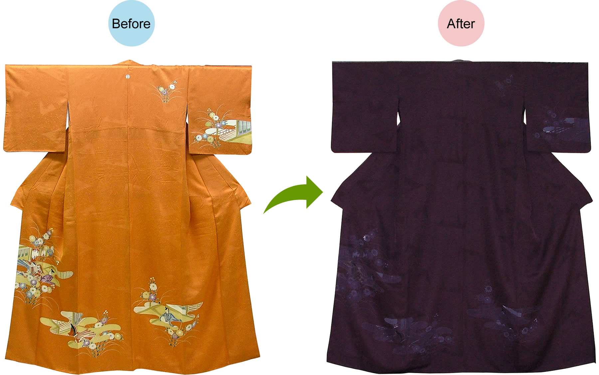
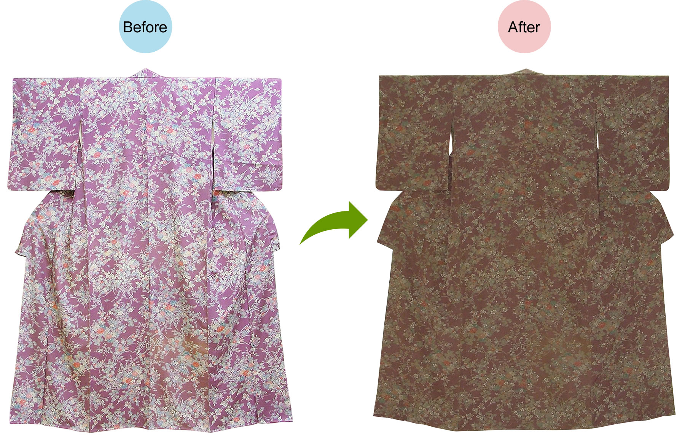
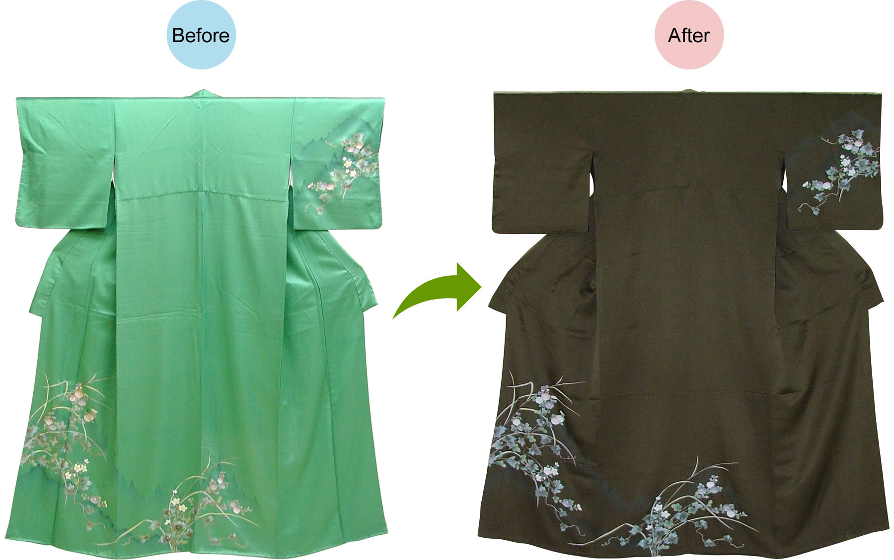
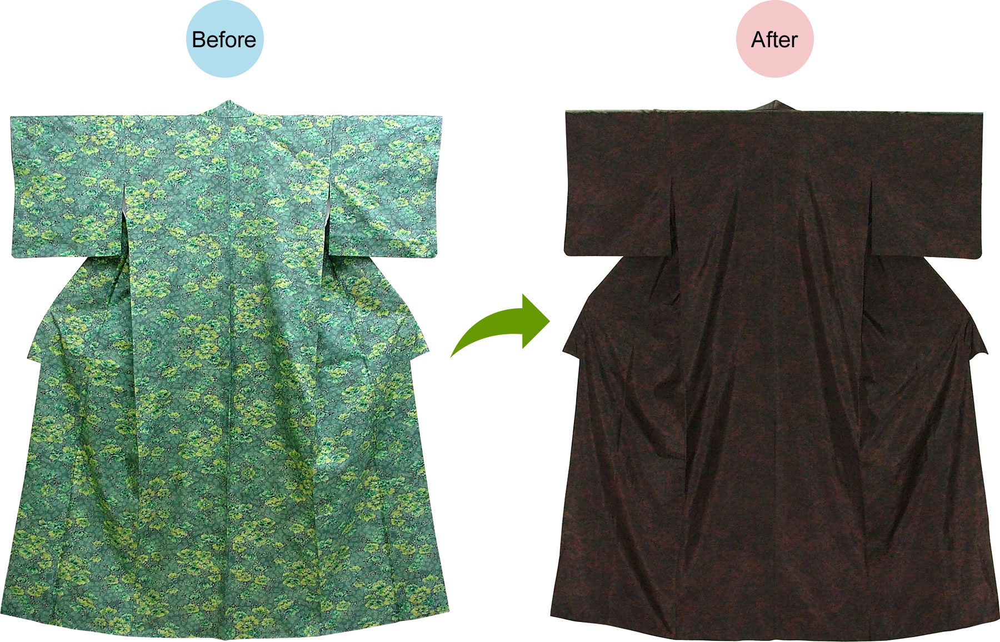
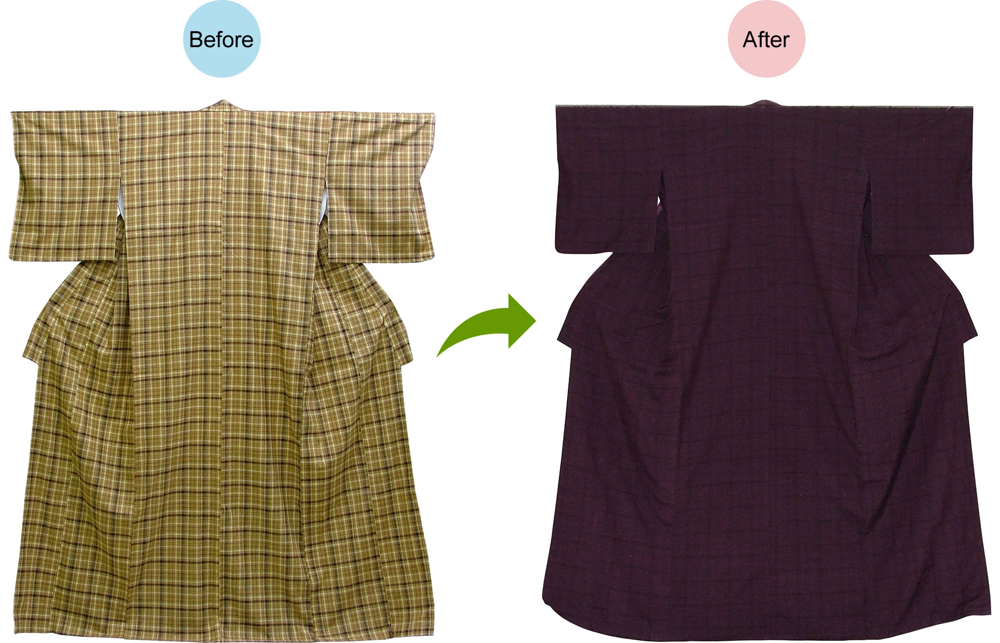
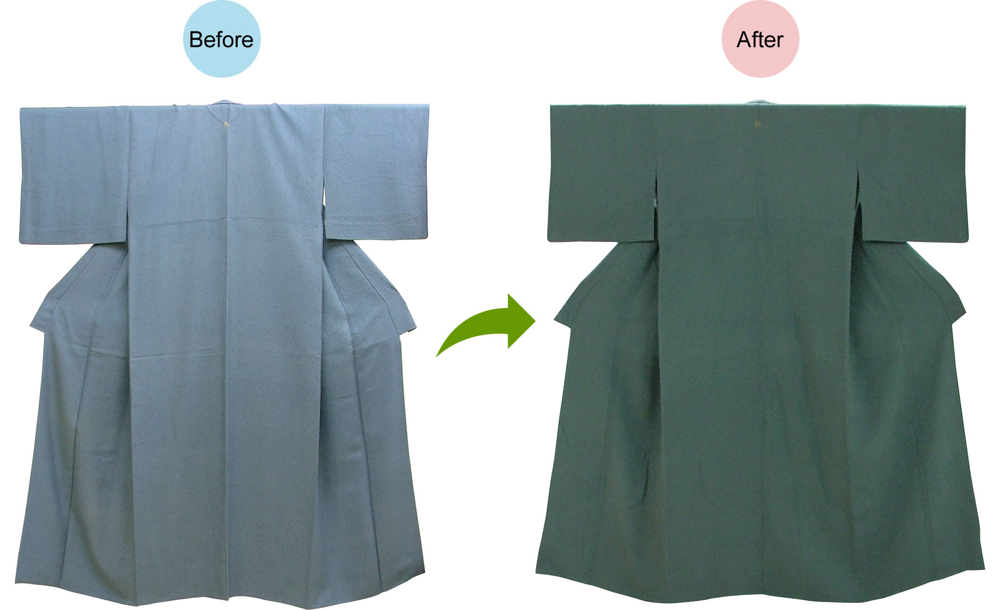
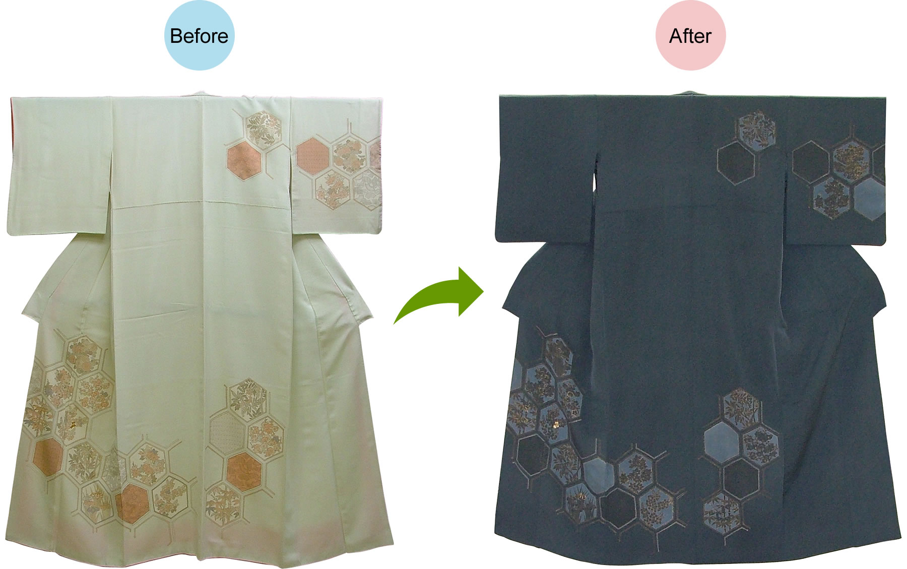

派手なきものを地色と柄ごと染めることで、落ち着いた印象にし、今までと違った雰囲気でご着用いただけます。
色褪せたおきものを別色に染め替えることで、今までと違った雰囲気に作り替えます。
顔料で柄付されている場合、丸染めでも柄を生かすことが出来ます。
色大島などを丸染めすることで、時代を感じさせない美しい着物に生まれ変わります。
極限まで元の柄をなくすことで、おしゃれな無地感の着物として楽しめます。
色褪せたり、あきがきてしまった色無地などの丸染めはとてもおすすめです。
地色・柄の色はもちろん、八掛の色が少し派手に感じた時も丸染めがおすすめ。
無地・小紋を脱色して付下げとして着用できます。
※右袖が丸染め前の色
無地・小紋を脱色して付下げとして着用できます。
※右袖が丸染め前の色